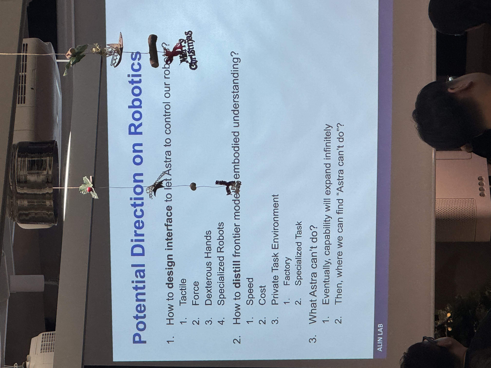
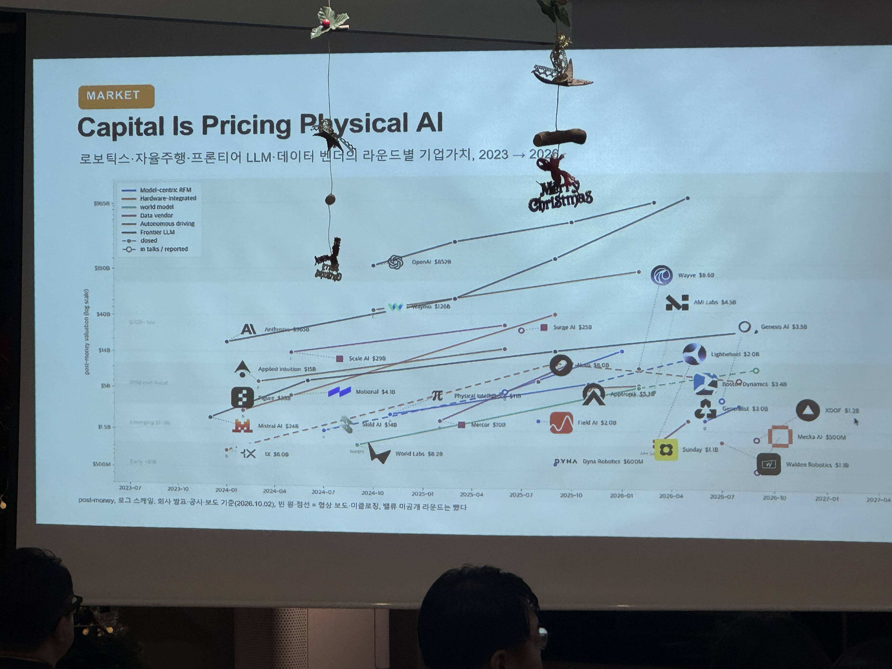
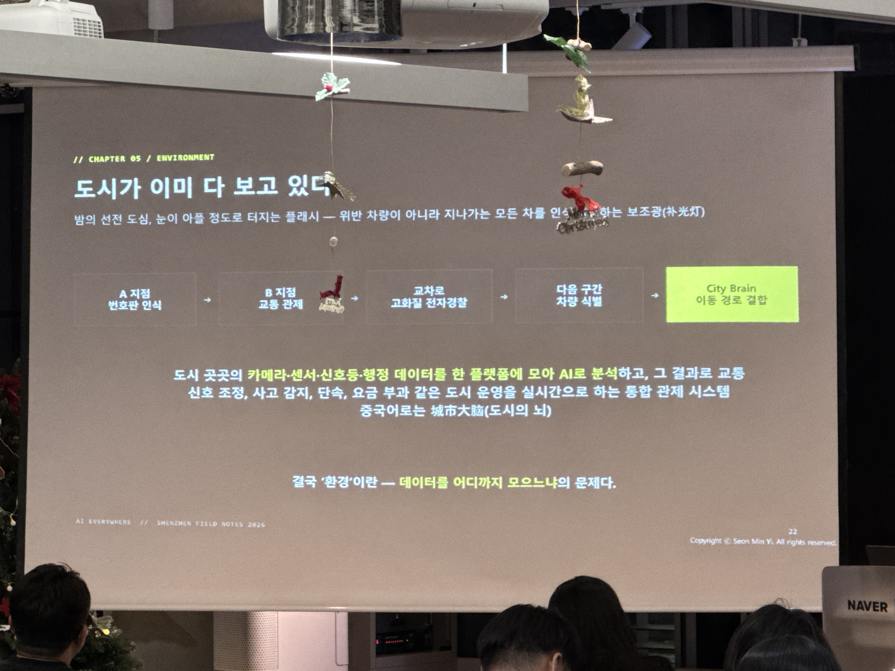

이번 밋업에서 반복해서 등장한 질문은 하나였다. 로봇이 실제 환경에서 유용한 일을 하려면 무엇이 더 필요할까? 모델의 크기나 시각적 이해 능력만으로는 충분하지 않다. 로봇이 접촉을 감지하고, 과거 행동을 기억하고, 실패에서 회복하며, 실제 작업 환경에 배포될 수 있도록 데이터·하드웨어·시뮬레이션·소프트웨어가 함께 설계되어야 한다는 점이 여러 발표에서 드러났다.
밋업에서 관통한 문제의식
발표 주제는 서로 달랐지만 공통된 방향이 있었다. 로봇 AI의 경쟁은 더 좋은 정책(policy)을 만드는 데서 끝나지 않는다. 실제 로봇이 사용할 수 있는 데이터와 센서, 행동 인터페이스, 시뮬레이션 환경, 운영 체계를 얼마나 잘 연결하느냐가 중요해지고 있다.
특히 LLM과 VLM의 발전으로 로봇이 언어 지시를 이해하고 도구를 호출하는 능력은 빠르게 좋아지고 있다. 하지만 물체를 집고, 힘을 조절하고, 움직이는 물체에 반응하고, 여러 단계의 작업을 이어가는 문제는 여전히 별도의 난제를 갖는다. 밋업에서는 이를 해결하기 위한 방향으로 Agent Robotics, 다양한 형태의 로봇 데이터, 촉각·토크 정보, Real-to-Sim-to-Real, 실제 현장 배포가 논의됐다.
윤병준 — Agent Robotics와 도구의 설계
프론티어 모델을 로봇에 잘 활용하려면

첫 번째 발표는 프론티어 모델이 로봇을 다루는 방식이 어떻게 달라지고 있는지에 초점을 맞췄다. 과거에도 LLM을 이용해 코드를 작성하거나 자연어로 로봇을 제어하려는 시도는 있었지만, 최근에는 모델이 주어진 도구를 사용하는 수준을 넘어 필요한 도구를 직접 만들어 문제를 해결하는 흐름이 두드러진다는 설명이었다.
발표자는 연구실에서 로봇 스테이션을 직접 제작한 사례를 소개했다. 상용 스테이션의 비용 부담을 줄이기 위해 로봇과 주변 구조물의 사진을 모델에 제공하고, 이미지의 왜곡과 소실점을 고려해 치수를 역산하는 방식으로 설계를 진행했다. 모델이 단순히 답을 생성하는 것이 아니라, 문제 해결에 필요한 계산·시각화 도구를 만들어 활용한 사례다.
로봇 제어에서도 인터페이스가 중요하다. 관절 각도를 직접 지정하는 방식보다 “왼쪽으로 이동”, “앞으로 이동”처럼 모델이 이해하고 수행하기 쉬운 추상화된 명령을 제공했을 때 더 안정적인 결과를 얻을 수 있다는 점을 설명했다. 웹 기반의 간단한 조작 화면을 만들고 브라우저를 통해 버튼을 누르게 하는 방식도 소개됐다.
코드 역시 하나의 도구다. 자연어 명령을 매번 직접 실행하는 대신, 반복 가능한 제어 절차를 코드로 구성하면 성공률과 재현성을 높일 수 있다. 다만 발표에서 소개된 실험은 동작의 신뢰도는 높았지만 이동에 상당한 시간이 걸리는 등 지연 시간과 비용 문제가 남아 있었다.
발표에서 짚은 한계와 과제
- 비용: 프론티어 모델을 이용한 영상 데이터 애노테이션은 시간당 비용이 높아 대규모 로봇 데이터 구축에 부담이 된다.
- 속도: 기존 VLA의 짧은 추론 주기와 비교하면 에이전틱한 모델은 응답 지연이 커질 수 있다.
- 인터페이스: 촉각이나 손의 움직임처럼 언어·이미지로 표현하기 어려운 정보를 모델에 어떻게 전달할지 고민해야 한다.
- 배포: 모델의 능력이 좋아지는 것과 별개로, 실제 작업 환경에서 더 빠르고 저렴하며 안정적으로 실행하는 방법이 필요하다.
발표의 중요한 메시지는 모델의 성능을 기다리는 것만큼이나 모델이 잘 사용할 수 있는 도구와 인터페이스를 설계하는 일이 중요하다는 점이었다. 로봇 제어 인터페이스를 어떻게 정의하느냐에 따라 같은 모델도 전혀 다른 성능을 보일 수 있다.
조성만 — 로봇 학습 데이터의 변화
로봇에게 어떤 데이터를 가르쳐야 할까

두 번째 발표는 로봇 데이터 인프라와 데이터 수집 방식의 변화에 관한 내용이었다. LLM은 인터넷에 축적된 텍스트를 대규모로 활용할 수 있었지만, 로봇은 실제 물리적 행동과 센서 정보가 필요하다. 따라서 로봇 학습에서는 어떤 데이터를, 어떤 장비로, 어느 정도의 품질과 규모로 수집할 것인지가 중요한 문제가 된다.
데이터 수집 방식은 사람의 일상 행동을 촬영하는 Ego Video, 손목 카메라, UMI와 같은 착용형 장치, 그리고 로봇을 직접 조작하는 Teleoperation 등으로 확장되고 있다. 사람의 시점에서 작업을 촬영하면 로봇이 실제로 물체를 다루는 상황과 손의 움직임을 배울 수 있고, 손목 카메라를 함께 사용하면 머리 쪽 카메라에서 가려지는 장면을 보완할 수 있다.
발표에서 특히 강조한 것은 데이터의 양만 늘린다고 학습 성능이 보장되지는 않는다는 점이다. 대규모 휴먼 데이터는 수집량을 늘리기 유리하지만 로봇의 관절과 행동으로 연결하는 과정이 필요하다. 반면 Teleoperation은 로봇의 실제 행동을 직접 기록할 수 있지만, 조작 난도가 높고 로봇 한 대당 한 명의 작업자가 필요하다는 점에서 확장성이 제한된다.
촉각 데이터가 필요한 이유
시각 정보만으로는 물체와 손가락이 실제로 어떻게 접촉하고 있는지, 얼마나 강한 힘으로 잡고 있는지 정확히 파악하기 어렵다. 접시를 잡는 장면을 예로 들면, 영상만으로는 어느 손가락이 접촉하고 있는지, 미끄러짐이 발생하는지, 물체를 놓치지 않으려면 어느 정도의 힘이 필요한지 알기 어렵다.
촉각 센서는 이러한 정보를 보완한다. 로봇이 물체를 잡고 조작하는 과정에서 접촉 위치와 압력, 힘의 변화를 파악할 수 있기 때문이다. 발표자는 촉각 데이터 수집이 텔레오퍼레이션보다 간단할 것이라는 예상과 달리, 실제로는 센서와 데이터 수집 과정의 난도가 높다는 점도 언급했다.
조준호 — VLA에서 Agent Robotics로
모델이 행동을 생성하는 것에서, 작업을 완수하는 것으로
세 번째 발표에서는 VLA 중심의 로봇 학습이 에이전틱한 작업 수행으로 확장되는 흐름과 실제 환경에 배포하기 위한 시뮬레이션의 역할이 다뤄졌다. 기존 VLA가 주어진 관측과 지시에 따라 행동을 출력하는 데 초점을 맞췄다면, Agent Robotics에서는 목표를 달성하기 위해 필요한 행동을 계획하고 도구를 사용하며 실패 결과를 반영해 다음 행동을 조정하는 능력이 중요해진다.
이 과정에서 시뮬레이션은 단순한 테스트 환경이 아니라, 실제 환경에서 수행하기 전에 작업을 연습하고 시행착오를 줄이는 공간으로 활용될 수 있다. 실제 환경을 관측해 시뮬레이션으로 구성하고, 시뮬레이션에서 여러 번 시도한 뒤 실제 로봇에 배포하는 Real-to-Sim-to-Real 접근이 그 예다.
발표와 토론에서는 반드시 모델을 추가 학습해야만 성능을 개선할 수 있는 것은 아니라는 관점도 나왔다. 시뮬레이션에서 성공·실패 경험을 축적하고, 이를 텍스트 기반의 메모리나 플레이북으로 정리한 다음 실제 환경에서 발생한 차이를 반영하는 방식도 가능하다.
Playbook과 메모리
작업을 수행하며 “이 조건에서는 성공했다”, “이 방식은 실패했다”는 정보를 기록하면 이후 비슷한 상황에서 이를 참고할 수 있다. 이는 모델 파라미터를 매번 업데이트하는 학습과는 다른 접근이다. 장기적으로는 시뮬레이션과 실제 환경 사이의 차이를 기록하고, 그 차이를 보정하는 과정이 에이전트의 작업 수행 능력에 중요한 역할을 할 수 있다.
이선민 — 선전의 Physical AI 생태계
하드웨어와 제조 기반이 만드는 실행 속도

마지막 발표는 선전이라는 도시를 Physical AI 관점에서 바라보는 내용이었다. 선전은 과거 어촌에서 출발해 화웨이와 텐센트 등 기술 기업을 배출한 도시로 성장했다. 발표에서는 이 지역의 제조 인프라와 부품 공급망, 빠른 시제품 제작 환경이 앞으로 Physical AI 산업에서도 중요한 기반이 될 수 있다는 점을 설명했다.
중국의 강점은 단순히 로봇을 많이 생산한다는 데 있지 않다. 필요한 부품이나 특화된 하드웨어를 찾고, 제작하고, 실제 제품에 적용하는 과정이 지역의 공급망과 제조 생태계 안에서 빠르게 이어질 수 있다는 점이 중요하다. 로봇을 개발하는 팀이 아이디어를 실제 하드웨어로 옮기고 반복적으로 수정하는 데 유리한 환경이다.
발표와 질의응답에서는 로봇 택시, 드론 배송, 로봇 카페 등 실제 서비스 환경에서 기술을 시험하는 사례들도 언급됐다. Physical AI의 발전을 연구실 안의 모델 성능만으로 볼 것이 아니라, 실제 사용자가 있는 환경에서 얼마나 빠르게 실험하고 배포하는지 함께 봐야 한다는 메시지로 이어졌다.
중국 생태계를 이해할 때의 관점
- 공개된 컨퍼런스나 온라인 자료만으로 현지 기술 수준 전체를 파악하기는 어렵다.
- 특정 부품이나 기술을 찾으려면 현지 제조사·연구팀·관계자와 직접 연결되는 접근이 중요하다.
- 하드웨어 공급망과 생산 역량은 모델 개발과 별개가 아니라, 실제 제품화 속도를 결정하는 요소다.
- 도시 단위의 제조·창업 생태계가 실험과 배포의 비용을 낮출 수 있다.
패널 토크와 현장 질문
패널 토크에서는 발표 내용을 실제 연구와 사업에 적용할 때 마주하는 질문들이 이어졌다. 아래는 질문의 취지를 중심으로 주제별로 묶어 정리한 내용이다. 녹취에서 명확하지 않은 고유명사나 수치는 단정하지 않았다.
1. 선전에서 관찰한 중국 로봇 생태계의 강점은 무엇인가
선전의 강점은 하드웨어를 빠르게 만들고 수정할 수 있는 제조 생태계에 있다는 의견이 나왔다. 제품을 개발할 때 필요한 부품과 전문 업체를 찾고, 실제로 연결해 제작을 진행하는 과정이 중요하다. 공개된 전시회나 인터넷 검색만으로 현지 기술을 모두 파악하기는 어렵고, 현지 네트워크를 통해 접근해야 하는 영역도 있다는 답변이 이어졌다.
2. 로봇 하드웨어가 없어도 로보틱스 연구를 시작할 수 있을까
실제 로봇이 있으면 좋지만, 처음부터 모든 실험을 하드웨어에서 진행할 필요는 없다는 맥락이 공유됐다. 시뮬레이터에서 작업 환경을 구성하고, 로봇의 행동을 시험하고, 필요한 도구와 제어 인터페이스를 만드는 방식으로 시작할 수 있다. 실제 배포 단계에서는 하드웨어 특성과 시뮬레이션 간 차이를 확인하고 보정해야 한다.
3. Real-to-Sim-to-Real은 어떤 방식으로 활용되는가
실제 환경을 여러 각도에서 관측해 시뮬레이션 환경으로 구성한 뒤, 그 안에서 작업을 반복적으로 시도하는 흐름이 논의됐다. 성공과 실패를 메모리나 플레이북 형태로 축적하고, 실제 로봇에서 실행했을 때 나타나는 차이를 반영할 수 있다. 모든 문제를 반드시 파라미터 학습으로 해결하는 것이 아니라, 시뮬레이션과 메모리 기반의 시행착오를 활용하는 방법도 가능하다는 설명이었다.
4. 로봇 데이터는 어떤 방식으로 확보해야 하는가
Ego Video, 손목 카메라, UMI, 텔레오퍼레이션, 촉각 센서 등 여러 데이터 수집 방식이 언급됐다. 대규모 휴먼 데이터는 수집량을 늘리는 데 유리하지만 실제 로봇의 행동으로 연결하는 과정이 필요하다. 텔레오퍼레이션은 로봇의 동작을 직접 기록할 수 있지만 작업자와 장비가 필요해 확장에 제약이 있다. 결국 데이터 규모와 정밀도 사이의 균형을 찾아야 한다.
5. Agent Robotics는 어떤 방식으로 학습되는가
에이전틱한 로봇의 작업 수행은 강화학습만으로 설명되지 않는다. 시뮬레이션에서 여러 번 시도하고 결과를 메모리로 남기는 방법, 기존 모델이 가진 도구 사용 능력을 활용하는 방법, 특정 환경에 맞는 도구와 플레이북을 구성하는 방법 등이 함께 논의됐다. 관련 태스크와 시뮬레이션을 외부에서 조달하는 시장은 아직 초기 단계라는 의견도 있었다.
6. Physical AI에서 실제 배포는 얼마나 중요한가
로봇 기업이 장기적인 기술 가능성만 바라보기보다 1~2년 안에 현실적인 배포가 가능한지를 함께 고민해야 한다는 의견이 제시됐다. 어떤 기술이든 실제 사용 환경에서 작동하고 가치를 만들어내는 과정이 중요해지고 있다는 의미다. 특히 한국 기업은 자국 시장에서 어떤 문제를 해결하고, 어떤 현장에 배포할 수 있는지 구체화할 필요가 있다는 질문으로 이어졌다.
7. Physical AI의 안전성은 어떻게 확보할 것인가
한 참석자는 모델이 매뉴얼이나 업무 규칙을 알고 있어도 긴 작업 과정에서 일부 제약을 놓칠 수 있다는 점을 지적했다. 물리적 로봇은 소프트웨어처럼 간단히 되돌리기 어려우므로 안전성이 중요하다는 질문이었다. 답변에서는 모델 자체에 모든 규칙 준수를 맡기기보다, 하네스와 코드 기반 검증, 액터 단계의 제약 조건 및 별도 안전장치를 활용하는 방향이 언급됐다. 모델의 판단과 실제 모터 명령 사이에 독립적인 검증 계층을 두는 접근이 유효할 수 있다는 취지다.
8. 중국의 그리퍼 전문 기업과 기술을 어떻게 찾을 수 있을까
중국에는 다양한 하드웨어 전문 기업이 존재하지만, 외부에서 검색하거나 전시회에서 관찰하는 것만으로는 필요한 업체를 찾지 못할 수 있다는 답변이 나왔다. 실제로 필요한 부품이 있다면 현지에 있는 관계자와 연결해 공급사와 기술 역량을 확인하는 것이 중요하다는 설명이었다.
9. 한국의 Physical AI 경쟁력은 어디에 있는가
데이터가 중요하다는 이야기가 반복됐다. 한국에는 산업 현장에 축적된 데이터가 있지만, 이를 로봇 학습에 사용할 수 있는 형태로 구조화하고 접근할 수 있게 만드는 일은 별개의 과제다. 산업 데이터가 실제 학습과 배포로 연결된다면 경쟁력을 만들 여지가 있다는 의견이 나왔다. 동시에 데이터가 기업 내부에 분산되어 있고 외부 공유가 어렵다는 현실적 제약도 언급됐다.
10. 소버린 AI와 로봇 배포 시장의 관계
로봇을 어느 국가와 산업 현장에 배포할 것인지, 해당 시장에서 자체 기술과 공급망이 얼마나 필요한지에 대한 질문이 나왔다. 이에 대해 배포 가능성을 고려하지 않은 채 먼 미래의 기술만 추구하는 전략은 위험할 수 있다는 개인적 견해가 제시됐다. 소버린 AI 여부만으로 생존을 판단하기보다 실제 고객과 배포 환경을 구체적으로 확보하는 일이 중요하다는 맥락으로 이해할 수 있다.
정리하며
이번 밋업을 통해 느낀 점은 Physical AI의 발전을 하나의 모델이나 알고리즘으로 설명하기 어렵다는 것이다. 모델이 언어와 시각을 이해하는 능력이 좋아지고 있지만, 실제 로봇은 물체와 접촉하고 힘을 조절하며 시간에 따라 변하는 환경에 반응해야 한다. 이 과정에는 모델 외에도 데이터 수집 장비, 센서, 로봇 하드웨어, 시뮬레이션, 제어 인터페이스와 배포 환경이 필요하다.
RLDX-1은 이 문제를 손재주라는 구체적인 영역에서 보여주는 사례다. 시각 정보만으로 설명하기 어려운 접촉과 힘의 변화를 촉각·토크 모달리티로 다루고, 시간 정보와 메모리를 결합해 복합적인 조작 작업을 수행하려 한다. 특히 사람 손의 데이터를 3D 공간으로 재구성하고 로봇 손의 행동으로 retargeting하는 방식은 3D 재구성 기술이 로봇 학습 데이터 파이프라인과 직접 연결될 수 있다는 점에서도 흥미롭다.
개인적으로는 3D Scene Understanding과 SimReady Asset, 시뮬레이션 기반 평가를 실제 로봇 학습과 어떻게 연결할 수 있을지 생각해 볼 수 있었다. 장면을 이해하고 물체를 인식하는 것에서 나아가, 물체의 물리적 속성과 접촉 가능성, 조작 과정에서 발생하는 실패까지 평가할 수 있어야 시뮬레이션이 실제 배포에 더 가까워질 수 있다.
결국 Physical AI의 다음 단계는 더 똑똑한 모델을 만드는 것만이 아니라, 모델이 현실 세계에서 배우고 행동하고 실패를 회복할 수 있는 전체 시스템을 구축하는 일에 가까워 보인다. 이번 밋업은 그 시스템을 구성하는 여러 조각이 어디에서 발전하고 있는지 살펴볼 수 있었던 자리였다.
참고 자료
공식 기술 블로그 보기
이 글은 2026년 11월 18일 밋업를 바탕으로 발표와 질의응답의 흐름을 재구성한 기록이다.